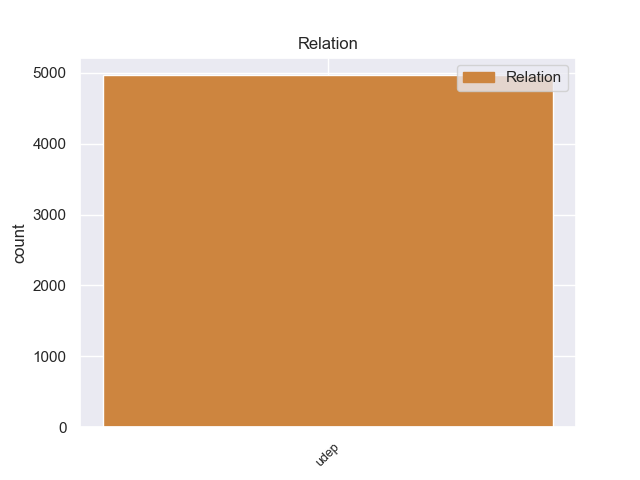
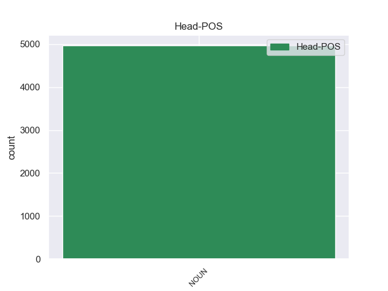
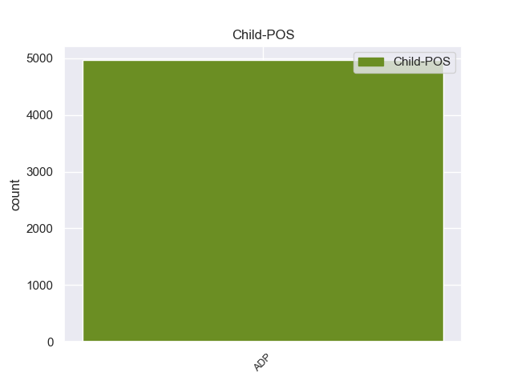

Distribution of features within this leaf



Agreement Rules sorted by frequency.
- When the dependent token is the underspecified dependency(udep) of the head token, and the head token is NOUN
1 Philips _ _ _ _ 0 _ _ _
2 erklärte _ _ _ _ 0 _ _ _
3 , _ _ _ _ 0 _ _ _
4 dass _ _ _ _ 0 _ _ _
5 die _ _ _ _ 0 _ _ _
6 Hälfte _ _ _ _ 0 _ _ _
7 der _ _ _ _ 0 _ _ _
8 CD-RW-Laufwerke _ _ _ _ 0 _ _ _
9 als _ _ _ _ 0 _ _ _
10 Einbaugeräte Gerät NOUN NN Case=Dat|Gender=Neut|Number=Sing|Person=3 0 _ _ _
11 in in ADP APPR AdpType=Prep|Case=Dat 10 udep _ _
12 Computern _ _ _ _ 0 _ _ _
13 verkauft _ _ _ _ 0 _ _ _
14 würden _ _ _ _ 0 _ _ _
15 . _ _ _ _ 0 _ _ _
Disagree Examples:
1 Die _ _ _ _ 0 _ _ _
2 Bonner _ _ _ _ 0 _ _ _
3 Staatsanwaltschaft _ _ _ _ 0 _ _ _
4 nahm _ _ _ _ 0 _ _ _
5 wegen _ _ _ _ 0 _ _ _
6 des _ _ _ _ 0 _ _ _
7 Verdachts Verdacht NOUN NN Case=Gen|Gender=Masc|Number=Sing|Person=3 0 _ _ _
8 auf auf ADP APPR AdpType=Prep|Case=Acc 7 udep _ _
9 Kapitalanlagebetrug _ _ _ _ 0 _ _ _
10 Ermittlungen _ _ _ _ 0 _ _ _
11 gegen _ _ _ _ 0 _ _ _
12 mehrere _ _ _ _ 0 _ _ _
13 Vorstände _ _ _ _ 0 _ _ _
14 auf _ _ _ _ 0 _ _ _
15 . _ _ _ _ 0 _ _ _
1 Ausbau _ _ _ _ 0 _ _ _
2 des _ _ _ _ 0 _ _ _
3 Kabelnetzes Kabelnetz NOUN NN Case=Gen|Gender=Neut|Number=Sing|Person=3 0 _ _ _
4 in in ADP APPR AdpType=Prep|Case=Dat 3 udep _ _
5 Baden-Württemberg _ _ _ _ 0 _ _ _
6 für _ _ _ _ 0 _ _ _
7 Internet-Zugang _ _ _ _ 0 _ _ _
1 Das _ _ _ _ 0 _ _ _
2 US-amerikanische _ _ _ _ 0 _ _ _
3 Unternehmen _ _ _ _ 0 _ _ _
4 Callahan _ _ _ _ 0 _ _ _
5 will _ _ _ _ 0 _ _ _
6 den _ _ _ _ 0 _ _ _
7 Kauf _ _ _ _ 0 _ _ _
8 des _ _ _ _ 0 _ _ _
9 TV-Kabelnetzes Kabelnetz NOUN NN Case=Gen|Gender=Neut|Number=Sing|Person=3 0 _ _ _
10 in in ADP APPR AdpType=Prep|Case=Dat 9 udep _ _
11 Baden-Württemberg _ _ _ _ 0 _ _ _
12 in _ _ _ _ 0 _ _ _
13 wenigen _ _ _ _ 0 _ _ _
14 Wochen _ _ _ _ 0 _ _ _
15 unter _ _ _ _ 0 _ _ _
16 Dach _ _ _ _ 0 _ _ _
17 und _ _ _ _ 0 _ _ _
18 Fach _ _ _ _ 0 _ _ _
19 bringen _ _ _ _ 0 _ _ _
20 . _ _ _ _ 0 _ _ _
1 Der _ _ _ _ 0 _ _ _
2 Bund _ _ _ _ 0 _ _ _
3 für _ _ _ _ 0 _ _ _
4 Umwelt _ _ _ _ 0 _ _ _
5 und _ _ _ _ 0 _ _ _
6 Naturschutz _ _ _ _ 0 _ _ _
7 Deutschland _ _ _ _ 0 _ _ _
8 ( _ _ _ _ 0 _ _ _
9 BUND _ _ _ _ 0 _ _ _
10 ) _ _ _ _ 0 _ _ _
11 und _ _ _ _ 0 _ _ _
12 der _ _ _ _ 0 _ _ _
13 Bundesverband _ _ _ _ 0 _ _ _
14 Bürgerinitiativen _ _ _ _ 0 _ _ _
15 Umweltschutz _ _ _ _ 0 _ _ _
16 ( _ _ _ _ 0 _ _ _
17 BBU _ _ _ _ 0 _ _ _
18 ) _ _ _ _ 0 _ _ _
19 haben _ _ _ _ 0 _ _ _
20 die _ _ _ _ 0 _ _ _
21 Bundesregierung _ _ _ _ 0 _ _ _
22 aufgefordert _ _ _ _ 0 _ _ _
23 , _ _ _ _ 0 _ _ _
24 mindestens _ _ _ _ 0 _ _ _
25 ein _ _ _ _ 0 _ _ _
26 Prozent _ _ _ _ 0 _ _ _
27 des _ _ _ _ 0 _ _ _
28 Gewinns Gewinn NOUN NN Case=Gen|Gender=Masc|Number=Sing|Person=3 0 _ _ _
29 aus aus ADP APPR AdpType=Prep|Case=Dat 28 udep _ _
30 der _ _ _ _ 0 _ _ _
31 Versteigerung _ _ _ _ 0 _ _ _
32 der _ _ _ _ 0 _ _ _
33 Mobilfunklizenzen _ _ _ _ 0 _ _ _
34 zur _ _ _ _ 0 _ _ _
35 Verfügung _ _ _ _ 0 _ _ _
36 zu _ _ _ _ 0 _ _ _
37 stellen _ _ _ _ 0 _ _ _
38 , _ _ _ _ 0 _ _ _
39 um _ _ _ _ 0 _ _ _
40 die _ _ _ _ 0 _ _ _
41 Auswirkungen _ _ _ _ 0 _ _ _
42 der _ _ _ _ 0 _ _ _
43 UMTS-Technologie _ _ _ _ 0 _ _ _
44 auf _ _ _ _ 0 _ _ _
45 Mensch _ _ _ _ 0 _ _ _
46 und _ _ _ _ 0 _ _ _
47 Umwelt _ _ _ _ 0 _ _ _
48 zu _ _ _ _ 0 _ _ _
49 erforschen _ _ _ _ 0 _ _ _
50 . _ _ _ _ 0 _ _ _
1 Hintergrund _ _ _ _ 0 _ _ _
2 ist _ _ _ _ 0 _ _ _
3 eine _ _ _ _ 0 _ _ _
4 Aussage _ _ _ _ 0 _ _ _
5 von _ _ _ _ 0 _ _ _
6 Ron _ _ _ _ 0 _ _ _
7 Sommer _ _ _ _ 0 _ _ _
8 , _ _ _ _ 0 _ _ _
9 demzufolge _ _ _ _ 0 _ _ _
10 es _ _ _ _ 0 _ _ _
11 mit _ _ _ _ 0 _ _ _
12 der _ _ _ _ 0 _ _ _
13 Einführung _ _ _ _ 0 _ _ _
14 des _ _ _ _ 0 _ _ _
15 neuen _ _ _ _ 0 _ _ _
16 Großhandelsflatrate-Angebots Angebot NOUN NN Case=Gen|Gender=Neut|Number=Sing|Person=3 0 _ _ _
17 zu zu ADP APPR AdpType=Prep|Case=Dat 16 udep _ _
18 Netzengpässen _ _ _ _ 0 _ _ _
19 kommen _ _ _ _ 0 _ _ _
20 könnte _ _ _ _ 0 _ _ _
21 , _ _ _ _ 0 _ _ _
22 was _ _ _ _ 0 _ _ _
23 besonders _ _ _ _ 0 _ _ _
24 fatale _ _ _ _ 0 _ _ _
25 Folgen _ _ _ _ 0 _ _ _
26 für _ _ _ _ 0 _ _ _
27 die _ _ _ _ 0 _ _ _
28 Erreichbarkeit _ _ _ _ 0 _ _ _
29 des _ _ _ _ 0 _ _ _
30 Notrufs _ _ _ _ 0 _ _ _
31 und _ _ _ _ 0 _ _ _
32 insgesamt _ _ _ _ 0 _ _ _
33 für _ _ _ _ 0 _ _ _
34 den _ _ _ _ 0 _ _ _
35 Wirtschaftsstandort _ _ _ _ 0 _ _ _
36 Deutschland _ _ _ _ 0 _ _ _
37 haben _ _ _ _ 0 _ _ _
38 würde _ _ _ _ 0 _ _ _
39 . _ _ _ _ 0 _ _ _